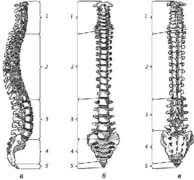
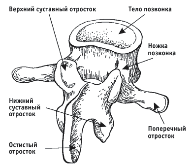
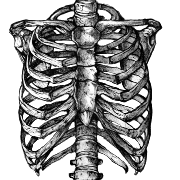

Глава 4. Кости туловища.
Кости туловища развиваются из склеротомов – вентромедиальной части сомитов. Зачаток тела каждого позвонка формируется из половин двух соседних склеротомов и лежит в промежутках между двумя соседними миотомами. Скопления мезенхимы распространяются от центра тела позвонка в дорсальном и вентральном направлениях, образуя зачатки дуг позвонков и ребер. Эта стадия развития костей, называется перепончатой.
Замена мезенхимной ткани хрящевой происходит путем образования отдельных хрящевых центров в теле позвонка, в дуге и зачатках ребер. На 4–м месяце внутриутробного развития образуются хрящевой позвонок и ребра.
Передние концы ребер срастаются с парными зачатками грудины. В дальнейшем, к 9–й неделе, они срастаются между собой по средней линии, формируя грудину.
Позвоночный столб
Функция позвоночного столба. Позвоночный столб выполняет роль осевого скелета, который является опорой тела, защитой находящегося в его канале спинного мозга и участвует в движениях туловища и черепа. Положение и форма позвоночного столба определяются прямохождением человека.

Рис 4.1 Позвоночный столб: а – вид справа; б – вид спереди; в – вид сзади; 1 – шейный отдел (С), 7 позвонков; 2 – грудной отдел (Th), 12 позвонков; 3 – поясничный отдел (L), 5 позвонков; 4 – крестцовый отдел (S), 5 сросшихся позвонков; 5 – копчиковый отдел (Со), 4–5 сросшихся позвонков
Общие свойства позвонков. Соответственно 3 функциям позвоночного столба каждый позвонок, vertebra (греч. spondylos), имеет:
1) опорную часть, расположенную спереди и утолщенную в виде короткого столбика, – тело, corpus vertebrae;
2) дугу, (arcus vertebrae), которая прикрепляется к телу сзади двумя ножками, (pediculi arcus vertebrae), и замыкает позвоночное отверстие, (foramen vertebrale); из совокупности позвоночных отверстий в позвоночном столбе образуется позвоночный канал, (canalis vertebralis), который защищает от внешних повреждений помещающийся в нем спинной мозг. Следовательно, дуга позвонка выполняет преимущественно функцию защиты;
3) на дуге находятся приспособления для движения позвонков – отростки.

Рис 4.2 Позвонок
По средней линии от дуги отходит назад остистый отросток, (processus spinosus); по бокам с каждой стороны – по поперечному, (processus transversus); вверх и вниз – парные суставные отростки, (processus articulares superiores et inferiores). Последние ограничивают сзади вырезки, парные (incisurae vertebrates superiores et inferiores), из которых при наложении одного позвонка на другой получаются межпозвоночные отверстия, (foramina intervertebral), для нервов и сосудов спинного мозга.
Суставные отростки служат для образования межпозвоночных суставов, в которых совершаются движения позвонков, а поперечные и остистый – для прикрепления связок и мышц, приводящих в движение позвонки. В разных отделах позвоночного столба отдельные части позвонков имеют различные величину и форму, вследствие чего различают позвонки: шейные (7), грудные (12), поясничные (5), крестцовые (5) и копчиковые (1 – 5).
Естественно, что опорная часть позвонка (тело) у шейных позвонков выражена сравнительно мало (у I шейного позвонка тело даже отсутствует), а по направлению вниз тела позвонков постепенно увеличиваются, достигая наибольших размеров у поясничных позвонков; крестцовые позвонки, несущие на себе всю тяжесть головы, туловища и верхних конечностей и связывающие скелет этих частей тела с костями пояса нижних конечностей, а через них с нижними конечностями, срастаются в единый крестец ("в единении сила").
Наоборот, копчиковые позвонки, представляющие остаток исчезнувшего у человека хвоста, имеют вид маленьких костных образований, в которых едва выражено тело и нет дуги. Дуга позвонка как защитная часть в местах утолщения спинного мозга (нижние шейные, верхние грудные и верхние поясничные позвонки) образует более широкое позвоночное отверстие. В связи с окончанием спинного мозга на уровне II поясничного позвонка нижние поясничные и крестцовые позвонки имеют постепенно суживающееся позвоночное отверстие, которое у копчика совсем исчезает.
Поперечные и остистый отростки, к которым прикрепляются мышцы и связки, более выражены там, где прикрепляется более мощная мускулатура (поясничный и грудной отделы), а на крестце в связи с исчезновением хвостовой мускулатуры эти отростки уменьшаются и, слившись, образуют на крестце небольшие гребни. Вследствие слияния крестцовых позвонков в крестце исчезают суставные отростки, которые хорошо развиты в подвижных отделах позвоночного столба, особенно в поясничном. Таким образом, чтобы понять строение позвоночного столба необходимо иметь в виду, что позвонки и отдельные части их более развиты в тех отделах, которые испытывают наибольшую функциональную нагрузку.
Наоборот, где функциональные требования уменьшаются, там наблюдается и редукция соответствующих частей позвоночного столба, например в копчике, который у человека стал рудиментарным образованием.
Шейные позвонки
Соответственно меньшей (по сравнению с нижележащими отделами позвоночного столба) нагрузке, падающей на шейные позвонки, их тела имеют меньшую величину. Поперечные отростки характеризуются присутствием отверстий поперечного отростка, foramina processus transversalia, которые получаются вследствие сращения поперечных отростков с рудиментом ребра, processus costarius.
Получающийся из совокупности этих отверстий канал защищает проходящие в них позвоночную артерию и вену. На концах поперечных отростков отмеченное сращение проявляется в виде двух бугорков – tubercula anterius et posterius.
Передний бугорок VI позвонка сильно развит и называется tuberculum caroticum – сонный бугорок (к нему можно прижать сонную артерию для остановки кровотечения).
Остистые отростки на концах раздвоены, за исключением VI и VII позвонков. У последнего остистый отросток отличается большой величиной, поэтому VII шейный позвонок называется vertebra prominens (выступающий), его легко прощупать у живого, чем пользуются для счета позвонков с диагностической целью.
I и II шейные позвонки имеют особую форму, обусловленную их участием в подвижном сочленении с черепом. У I позвонка – атланта, atlas, большая часть тела в процессе развития отходит ко II позвонку и прирастает к нему, образуя зуб, dens. Вследствие этого от тела атланта остается только передняя дуга, зато увеличивается позвоночное отверстие, заполняемое впереди зубом.
Передняя (arcus anterior) и задняя (arcus posterior) дуги атланта соединены между собой боковыми массами, massae laterales. Верхняя и нижняя поверхности каждой из них служат для сочленения с соседними костями: верхняя, вогнутая, fovea articularis superior, – для сочленения с соответственным мыщелком затылочной кости, нижняя, уплощенная, fovea articularis inferior, – с суставной поверхностью II шейного позвонка.
На наружных поверхностях передней и задней дуг имеются бугорки, tubercula anterius et posterius. II шейный позвонок – axis (axis, лат. – ось, следовательно, осевой), резко отличается от всех других позвонков наличием зубовидного отростка, или зуба, dens, гомологичного телу атланта.
Грудные позвонки
Грудные позвонки, vertebrae thoracicae, сочленяются с ребрами, поэтому они отличаются тем, что имеют реберные ямки, foveae costales, соединяющиеся с головками ребер и находящиеся на теле каждого позвонка вблизи основания дуги.
Так как ребра обыкновенно сочленяются с двумя соседними позвонками, то у большинства тел грудных позвонков имеется по две неполные (половинные) реберные ямки: одна на верхнем краю позвонка, fovea costalis superior, а другая на нижнем fovea costalis inferior.
Исключением является I грудной позвонок, который на верхнем краю имеет полную суставную ямку для I ребра, а на нижнем – половинную для II ребра. Далее X позвонок имеет одну только верхнюю полуямку для X ребра, на XI же и XII позвонках существует по одной полной ямке для сочленения с соответствующими ребрами. Таким образом, названные позвонки (I, X, XI и XII) очень легко отличить от других.
Тела грудных позвонков соответственно большей нагрузке, падающей на них, больше тел шейных позвонков. Суставные отростки стоят фронтально. Поперечные отростки направлены в стороны и назад. На их передней стороне имеется небольшая суставная поверхность, fovea costdlis processus transversus, – место сочленения с бугорком ребер. На поперечных отростках последних двух позвонков (XI и XII) эти суставные поверхности отсутствуют.
Остистые отростки грудных позвонков длинные и сильно наклонены книзу, вследствие чего налегают друг на друга наподобие черепиц, преимущественно в средней части грудного отдела позвоночного столба.
Поясничные позвонки, vertebrae lumbales, отличаются массивностью тел соответственно еще большей, чем у вышележащего отдела позвоночного столба, нагрузке. Остистые отростки направлены прямо назад, суставные стоят сагиттально.
Поперечный отросток в большей своей части представляет рудиментарное ребро, слившееся совершенно с настоящим поперечным отростком и отчасти сохранившееся в виде небольшого отростка позади основания его, неправильно называемого добавочным, processus accessorius (accessorius – добавочный, присоединяющийся).
Грудина
Грудина, sternum, напоминающая по форме кинжал, состоит из трех частей:верхняя – рукоятка, manubrium sterni,средняя – тело, corpus sterni,и нижняя – мечевидный отросток, processus xiphoideus.
На верхнем краю рукоятка имеет яремную вырезку, incisura jugularis; по бокам от нее на каждой стороне – по ключичной вырезке, incisura clavicularis, в которой происходит сочленение с груданным концом ключицы. Нижний край рукоятки и верхний край тела образуют между собой выдающийся кпереди так называемый угол грудины, angulus sterni.
На краю тела грудины имеются реберные вырезки, incisurae costales, в которых происходит сочленение с хрящами ребер, начиная со II.
Мечевидный отросток сильно варьирует по своему виду и может иметь отверстие, быть раздвоенным, отогнутым в сторону и пр. Строение грудины отличается обилием нежного губчатого вещества с очень богатой кровеносной сетью, что делает возможным внутригрудинное переливание крови. Богатое развитие в грудине костного мозга позволяет брать его отсюда для пересадок при лечении лучевой болезни.
Ребра
Ребер на каждой стороне 12. Все они своими задними концами соединяются с телами грудных позвонков. Передними концами 7 верхних ребер соединяются непосредственно с грудиной. Это истинные ребра, costae verae. Три следующих ребра (VIII, IX и X), присоединяющиеся своими хрящами не к грудине, а к хрящу предыдущего ребра, называются ложными ребрами, costae spuriae. Ребра XI и XII передними концами лежат свободно – колеблющиеся ребра, costae fluctuantes.

Рис 4.3 Строение грудины и ребер
Ребра, costae, представляют узкие изогнутые пластинки, состоящие в своей задней, наиболее длинной, части из кости, os costale, относящейся к длинным губчатым костям, а в передней, более короткой, из хряща, cartilago costalis. На каждом костном ребре различают задний и передний концы, а между ними тело ребра, corpus costae. Задний конец имеет утолщение, головку ребра, caput costae, с суставной поверхностью, разделенной гребешком, посредством которой ребро сочленяется с телами позвонков.
У I, XI и XII ребер суставная поверхность гребешком не разделяется. За головкой следует суженная часть – шейка ребра, collum costae, на верхнем краю которой проходит продольный гребешок, crista colli costae, отсутствующий у I и последнего ребра. У места перехода шейки в тело ребра находится бугорок ребра, tuberculum costae, с суставной поверхностью для сочленения с суставной поверхностью поперечного отростка соответствующего позвонка. На XI и XII ребрах бугорок отсутствует, так как эти ребра не сочленяются с поперечными отростками последних грудных позвонков.
Латерально от бугорка ребра изгиб ребра резко изменяется, и на этом месте на теле ребра сзади находится угол ребра, angulus costae. У I ребра angulus costae совпадает с бугорком, а на остальных ребрах расстояние между бугорком и реберным углом увеличивается до XI ребра, а на XII угол исчезает. На внутренней поверхности средних ребер вдоль нижнего края имеется борозда, sulcus costae, по которой проходят межреберные сосуды.
На верхней поверхности I ребра замечается практически важный бугорок, tuberculum m. scaleni anterioris, служащий местом прикрепления передней лестничной мышцы, m. scalenus anterior. Тотчас позади этого бугорка можно видеть небольшую борозду, sulcus a. subcldviae, в которую ложится подключичная артерия, перегибаясь через I ребро. Впереди бугорка находится другая, более плоская борозда для подключичной вены, sulcus v. subclaviae.
У взрослых на передних рентгенограммах ясно видны все 12 пар ребер, при этом передние части ребер наслаиваются на задние, пересекаясь между собой. Чтобы разобраться в этих наслоениях, надо иметь в виду, что задние части ребер связаны с позвоночным столбом и расположены косо — вниз и латерально. Передние части наклонены вниз, но в обратном направлении — медиально. Вследствие перехода костной ткани в хрящевую тени передних концов ребер как бы обрываются. На рентгенограммах заметны головки и шейки ребер, накладывающиеся на тело, и поперечные отростки соответствующих им позвонков. Около поперечных отростков видны также бугорки ребер и их сочленения.
Из вариантов развития ребер большое практическое значение имеют так называемые добавочные ребра (VII шейное ребро и I поясничное); XII пара ребер как образование рудиментарное варьирует сильнее других ребер. Различаются две формы XII ребер: саблеобразная, при которой длинное ребро наклонено вниз, и стилетообразная, когда маленькое короткое ребро расположено горизонтально. XII ребро может отсутствовать.